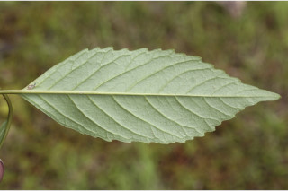
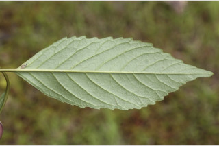
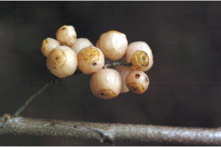
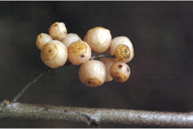

Small trees up to 4 m tall.
4 ಮೀ. ಎತ್ತರದವರೆಗಿನ ಸಣ್ಣ ಮರಗಳು.
Small trees up to 4 m tall.
சிறியமரங்கள் 4 மீ. உயரம் வரை வளரக்கூடியது.
Bark reddish brown, lenticellate; blaze brownish.
ತೊಗಟೆ ಕೆಂಪು ಮಿಶ್ರಿತ ಕಂದು ಬಣ್ಣದಲ್ಲಿದ್ದು ಸೂಕ್ಷ್ಮ ವಾಯು ವಿನಿಮಯ ಬೆಂಡು ರಂಧ್ರಗಳ ಸಮೇತವಿರುತ್ತದೆ;ಕಚ್ಚು ಮಾಡಿದ ಜಾಗ ಕಂದು ಬಣ್ಣದ ಛಾಯೆಯನ್ನು ಹೊಂದಿರುತ್ತದೆ..
Bark reddish brown, lenticellate; blaze brownish.
மரத்தின் பட்டை சிவப்பு ப்ரவுன் நிறமானது, பட்டைத்துளைகள் (லெண்டிசெல்லேட்) உடையது; உள்பட்டை ப்ரவுன் நிறமானது.
Young branchlets subterete, grey pubescent, lenticellate.
ಎಳೆಯ ಕಿರುಕೊಂಬೆಗಳು ಉಪ-ದುಂಡಾಗಿದ್ದು ಬೂದು ಭಣ್ಣದ ಮೃದು ತುಪ್ಪಳದಿಂದ ಕೂಡಿರುತ್ತದೆ ಹಾಗೂ ಸೂಕ್ಷ್ಮ ವಾಯು ವಿನಿಮಯ ಬೆಂಡು ರಂಧ್ರಗಳ ಸಮೇತವಿರುತ್ತದೆ.
Young branchlets subterete, grey pubescent, lenticellate.
சிறியநுனிக்கிளைகள் குறுக்குவெட்டுத் தோற்றத்தில் வளையமானது, சாம்பல் நிறமான உரோமங்களுடையது, பட்டைத்துளைகள் (லெண்டிசெல்லேட்) உடையது.
Leaves simple, alternate, spiral; petiole 2-3 cm long, canaliculate, pubescent when young; lamina 9-15 x 4.5-7.5 cm, elliptic-ovate or ovate -lanceolate, apex acuminate, base acute to rounded or slightly attenuate, margin coarsely serrate to dentate, pilose beneath; midrib raised above; secondary_nerves 8-13 pairs; tertiary_nerves broadly reticulate to obscure.
ಎಲೆಗಳು ಸರಳವಾಗಿದ್ದು ಪರ್ಯಾಯ ಮತ್ತು ಸುತ್ತು ಜೋಡನಾ ವ್ಯವಸ್ಥೆಯಲ್ಲಿರುತ್ತವೆ; ತೊಟ್ಟುಗಳು 2 – 3 ಸೆಂ.ಮೀ. ಉದ್ದವಿದ್ದು ಕಾಲುವೆಗೆರೆ ಸಮೇತವಿದ್ದು ಎಳೆಯದಾಗಿದ್ದಾಗ ಮೃದು ತುಪ್ಪಳದಿಂದ ಕೂಡಿರುತ್ತವೆ;ಪತ್ರಗಳು 9 – 15 X4.5 – 7.5 ಸೆಂ.ಮೀ.ವರೆಗಿನ ಗಾತ್ರವಿದ್ದು ಅಂಡವೃತ್ತದ- ಅಂಡ ಅಥವಾ ಅಂಡ-ಭರ್ಜಿಯ ಆಕಾರ ಹೊಂದಿದ್ದು, ಕ್ರಮೇಣವಾಗಿ ಚೂಪಾಗುವ ತುದಿ, ಚೂಪಾದದುದರಿಂದ ಹಿಡಿದು ದುಂಡಾದ ಅಥವಾ ಸ್ವಲ್ಪ ಮಟ್ಟಿಗೆ ಒಳಬಾಗಿದ ಬುಡ,ಅಂಚು ಒರಟಾದ ಗರಗಸದಿಂದ ದಂತಿತ ರೀತಿಯಲ್ಲಿಇರುತ್ತದೆ,ಪತ್ರಗಳು ತಳಭಾಗದಲ್ಲಿ ರೋಮಶವಾಗಿರುತ್ತವೆ ;ಮಧ್ಯ ನಾಳ ಮೇಲ್ಭಾಗದಲ್ಲಿಮೇಲೆದ್ದಿರುತ್ತದೆ; ಎರಡನೇ ದರ್ಜೆಯ ನಾಳಗಳು 8 ರಿಂದ 13 ಜೋಡಿಗಳಿಗಿರುತ್ತವೆ;ಮೂರನೇ ದರ್ಜೆಯ ನಾಳಗಳು ವಿಶಾಲ ಜಾಲಬಂಧ ನಾಳ ವಿನ್ಯಾಸದಲ್ಲಿರುತ್ತವೆ ಅಥವಾ ಅಸ್ಪಷ್ಟವಾಗಿರುತ್ತವೆ.
Leaves simple, alternate, spiral; petiole 2-3 cm long, canaliculate, pubescent when young; lamina 9-15 x 4.5-7.5 cm, elliptic-ovate or ovate -lanceolate, apex acuminate, base acute to rounded or slightly attenuate, margin coarsely serrate to dentate, pilose beneath; midrib raised above; secondary_nerves 8-13 pairs; tertiary_nerves broadly reticulate to obscure.
இலைகள் தனித்தவை, மாற்றுஅடுக்கமானவை, சுழல் போன்று அமைந்தவை; இலைக்காம்பு 2-3 செ.மீ. நீளமானது, குறுக்குவெட்டுத் தோற்றத்தில் கேனாலிகுலேட், இளம்பருவத்தில் உரோமங்களுடையது; இலை அலகு 9-15 x 4.5-7.5 செ.மீ., நீள்வட்டம்-முட்டை வடிவானது அல்லது முட்டை-ஈட்டி வடிவானது, அலகின் நுனி அதிக்கூரியது, அலகின் தளம் கூரியது முதல் வட்டமானது அல்லது சிறிது அட்டனுவேட், அலகின் விளிம்பு அகன்ற ரம்ப பற்களுடையது முதல் பற்களுடையது, கீழ்பரப்பு உரோமங்களுடையது; மையநரம்பு மேற்புறத்தில் அலகின் பரப்பைவிட உயர்ந்து இருக்கும்; இரண்டாம் நிலை நரம்புகள் 8-13 ஜோடிகள்; மூன்றாம் நிலை நரம்புகள் அகன்ற வலைப்பின்னல் போன்றவை அல்லது கண்களுக்கு புலப்படாது.
Inflorescence axillary panicled racemes; flowers polygamous, white.
ಪುಷ್ಪ ಮಂಜರಿಗಳು ಅಕ್ಷಾಕಂಕುಳಿನಲ್ಲಿನ ಪುನರಾವೃತ್ತಿಯಾಗಿ ಕವಲೊಡೆಯುವ ಮಧ್ಯಾಭಿಸರ ಮಾದರಿಯಲ್ಲಿರುತ್ತವೆ; ಹೂಗಳು ಸಂಕೀರ್ಣ ಲಿಂಗಿಗಳಾಗಿದ್ದು ಬಿಳಿ ಬಣ್ಣದಲ್ಲಿರುತ್ತವೆ.
Inflorescence axillary panicled racemes; flowers polygamous, white.
மஞ்சரி இலைக்கோணங்களில் காணப்படும் பேனிக்கிள் ரெசீம்; மலர்கள் பாலிகோமஸ், வெள்ளை நிறமானது.
Berry globose, whitish-pink when ripe; seeds numerous, angular.
ಬೆರ್ರಿ ಫಲಗಳು ಗೋಳಾಕಾರದಲ್ಲಿದ್ದು ಕಳೆತಾಗ ಬಿಳಿ ಮಿಶ್ರಿತ ನಸುಗೆಂಪು ಬಣ್ಣ ಹೊಂದಿರುತ್ತವೆ; ಬೀಜಗಳು ಅಸಂಖ್ಯವಾಗಿದ್ದು, ಕೋನಯುಕ್ತವಾಗಿರುತ್ತವೆ.
Berry globose, whitish-pink when ripe; seeds numerous, angular.
முழுச்சதைகனி (பெர்ரி) கோளவடிவானது, கனியும் போது வெள்ளை-பிங்க் நிறமானது; விதைகள் எண்ணற்றவை, கோணங்களுடையது.


 



 
